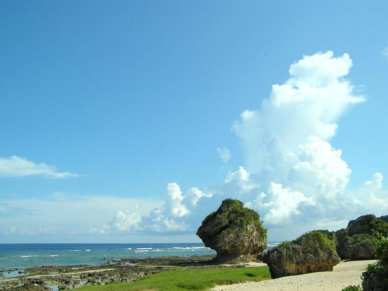

|
蜈支洲岛
坐落于三亚市北部的蜈支洲岛，全岛呈不规则蝴蝶状，通常是中、高端旅游者必选的海南旅游景点，位置上北与南湾猴岛遥遥相对，南邻号称天下第一湾的亚龙湾，距三亚市中心30公里，三亚凤凰国际机场38公里，紧邻海南东线高速公路，交通便利快捷。
|
|
大东海度假区
大东海度假区月牙形的海湾，辽阔的海面晶莹如镜，只见白沙融融，阳光、碧水、沙滩、绿树构成了一幅美丽的热带风光。这里四季如春，水暖沙平，冬季水温18度
，是冬泳避寒胜地和度假休闲者进行潜海观光、海水浴、阳光浴的理想之地。大东海被国家旅游局评为中国“四十佳”旅游景点之一。
大东海“水暖沙白滩平”，使大东海名声早已蜚声海内外。这里的海湾呈弓形，东南平行的两条小山脉就像两道堤墙筑入浩瀚的南海，铸成海湾和屏障。大东海三面环山，一面大海，一排排翠绿椰林环抱沙滩，其碧海、青山、绿椰、白沙滩独特之美博得海内外游客的赞叹。
|
|
海棠湾
海棠湾其实只是“半湾”，地处三亚市海棠镇与陵水黎族自治县英州镇交界处，因为行政区划的原因，本来一个完整的海湾一分为二，属于三亚境内的一半取名海棠湾，属于陵水境内的那一半海湾名称为土福湾，三亚这边就叫海棠湾。两处“半湾”岸线合计总长25公里。海棠湾与亚龙湾、大东海湾、三亚湾、崖州湾并列为三亚旅游区的五大名湾。古时，海棠湾镇又称藤桥墟，自古以来就是三亚的咽喉要地，历史上曾是县治之区，经贸非常活跃，与陵水英州镇、保亭三道农场、南田农场被称为“两镇两场”，是琼南一带农副产品、生产生活用品的集散地。海棠湾景象万千，由于远离城市，大部分区域没有开发，一种原生态的美使海南三亚市旅游独具魅力。十九公里长的岸线风光旖旎，河道如网，绿洲棋布，芳草萋萋。海棠湾南与亚龙湾国家旅游度假区相邻，集碧海、蓝天、青山、银沙、绿洲、奇岬、河流于一身。
|
|
天涯海角游览区
天涯海角游览区位于三亚市区约23公里的天涯镇下马岭山脚下，前海后山，风景独特。步入游览区，沙滩上那一对拔地而起的高10多米，长60多米的青灰色巨石赫然入目。两石分别刻有“天涯”和“海角”字样,意为天之边缘，海之尽头。
这里融碧水、蓝天于一色，烟波浩瀚，帆影点点。椰林婆娑，奇石林立，如诗如画。那刻有“天涯”、“海角”、“南天一柱”、“海判南天”的巨石雄峙南海之滨，为海南一绝。
|